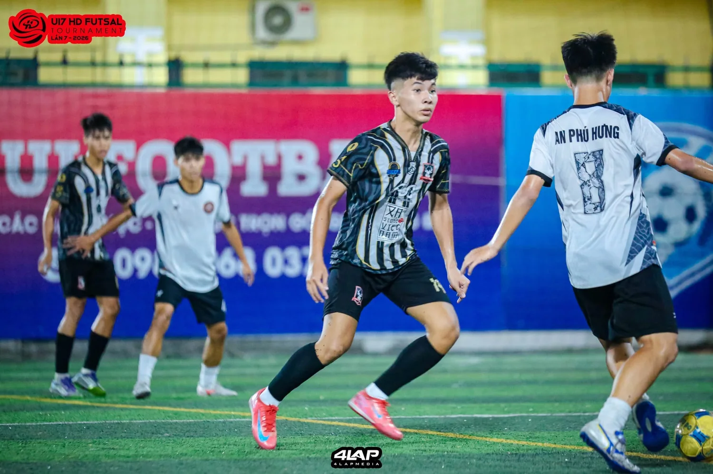
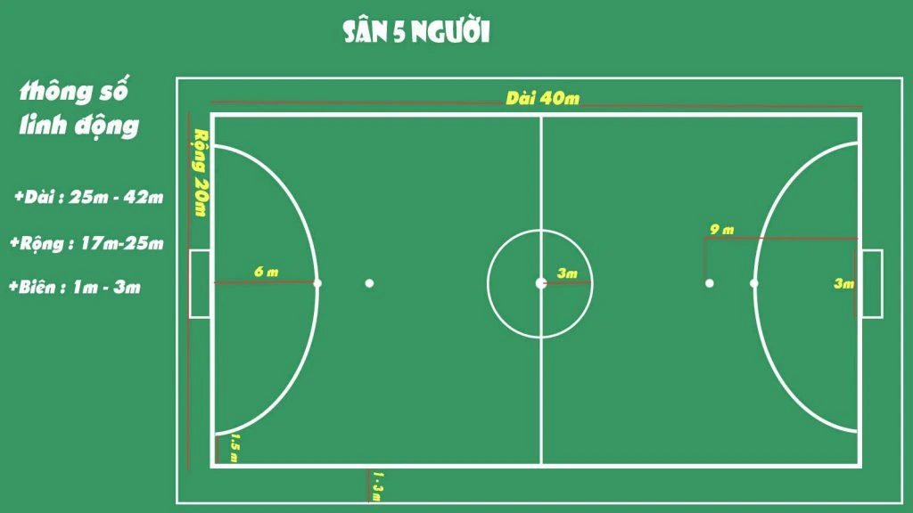
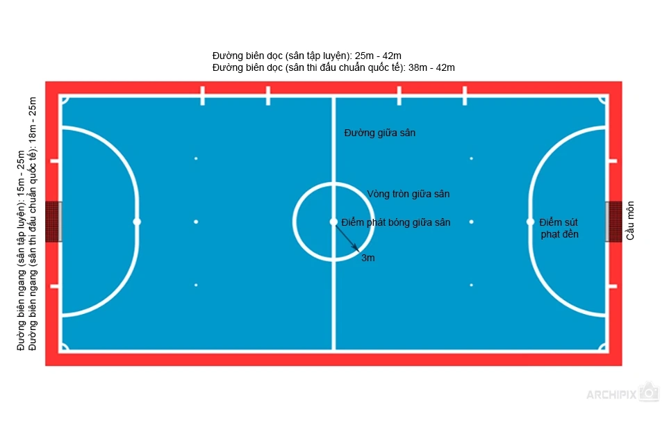
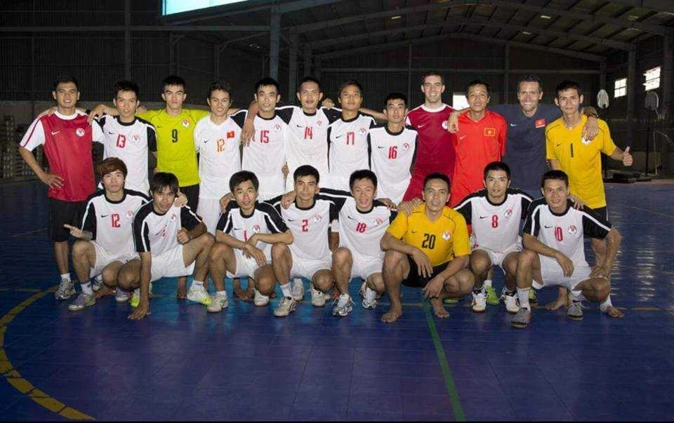
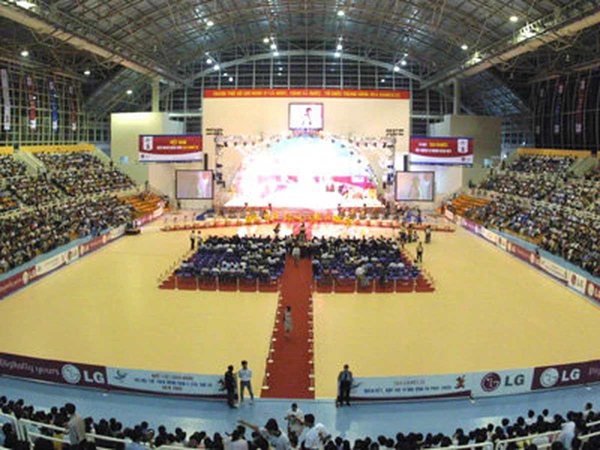
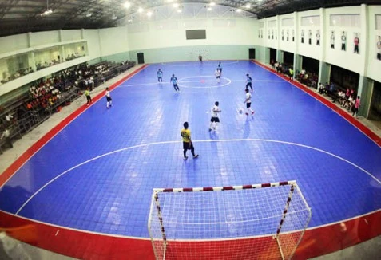

Vì sao futsal và sân 5 lên ngôi trong bóng đá phong trào trẻ Việt Nam?
Từ một môn thể thao từng thiếu cả mặt sân để tập luyện, futsal đã đi rất xa. Song song với hành trình ấy, sân 5 cỏ nhân tạo lại trở thành cánh cửa gần gũi nhất để hàng triệu người Việt Nam bước vào bóng đá.

Nguồn: Fanpage HD Futsal Tournament. Một giải đấu trẻ thi đấu trên sân cỏ nhân tạo 5 người nhưng vẫn sử dụng tên gọi “Futsal Tournament” và áp dụng luật futsal. Hình ảnh cho thấy ranh giới giữa futsal và sân 5 trong bóng đá phong trào Việt Nam ngày càng linh hoạt, khi điều kiện sân bãi thường quyết định nơi trận đấu được tổ chức.
Có một điều khá đặc biệt trong bóng đá Việt Nam: rất nhiều người bắt đầu yêu bóng đá không phải trên một sân 11 người, mà trên một mặt sân nhỏ, hai khung thành nhỏ và chỉ năm người mỗi đội.
Đó có thể là một sân futsal đúng nghĩa trong nhà thi đấu. Cũng có thể là một sân cỏ nhân tạo ngoài trời mà mọi người vẫn quen gọi bằng cái tên rất gần gũi: sân bóng mini.
Hai hình thức ấy không hoàn toàn đồng nhất, nhưng trong bóng đá phong trào Việt Nam, chúng gần nhau đến mức đôi khi cùng sử dụng một bộ luật, cùng một cách chơi và thậm chí cùng một cộng đồng cầu thủ.
Futsal và sân 5: khác mặt sân, gần như cùng một ngôn ngữ
Về cấu trúc cơ bản, futsal và bóng đá sân 5 có rất nhiều điểm tương đồng. Mỗi đội có năm cầu thủ trên sân. Không gian thi đấu nhỏ. Nhịp độ nhanh. Cầu thủ phải xử lý bóng trong phạm vi hẹp, di chuyển liên tục và đưa ra quyết định trong thời gian rất ngắn.
Ở nhiều giải sân 5 phong trào tại Việt Nam, luật thi đấu được xây dựng gần như trực tiếp từ futsal: thay người liên tục, đá biên, khoảng cách đá phạt, số lượng cầu thủ, cách tính lỗi và nhiều nguyên tắc vận hành trận đấu.
Khác biệt dễ nhìn thấy nhất thường nằm ở mặt sân và môi trường thi đấu. Futsal chính thống sử dụng mặt sàn cứng trong nhà, bóng futsal có độ nảy thấp và bộ luật riêng. Sân 5 phong trào ở Việt Nam phần lớn sử dụng cỏ nhân tạo ngoài trời và có thể điều chỉnh một số chi tiết để phù hợp với điều kiện sân bãi.


Một nền futsal từng phải đi tìm nơi để chơi
Futsal Việt Nam được hình thành từ những năm đầu hội nhập của nền thể thao nước nhà. Đội tuyển Futsal Việt Nam được thành lập từ năm 1990, trực thuộc Liên đoàn Bóng đá Việt Nam.
Đến năm 1997, đội tuyển mới thi đấu trận quốc tế đầu tiên trong lịch sử, gặp đội tuyển Futsal Ý tại Singapore. Trận đấu đầu tiên lại diễn ra ở nước ngoài bởi thời điểm ấy Việt Nam chưa có một nhà thi đấu thực sự phù hợp để tổ chức futsal ở tiêu chuẩn cần thiết.
Trong nhiều năm sau đó, futsal Việt Nam tiếp tục phát triển trong điều kiện cơ sở vật chất rất hạn chế. Các cầu thủ từng phải tập trong những khu nhà kho được cải tạo tạm, lót thảm nhựa, không gian ngột ngạt và thiếu ánh sáng.

Năm 2005, Việt Nam đăng cai Giải Futsal châu Á tại TP.HCM, với Nhà thi đấu Phú Thọ và Nhà thi đấu Quân khu 7 là những địa điểm quan trọng. Đây là giai đoạn futsal đã có thể bước ra những nhà thi đấu lớn, nhưng cơ sở chuyên biệt dành riêng cho môn này vẫn còn thiếu.

Năm 2007, Giải Futsal Vô địch Quốc gia Việt Nam chính thức ra đời. Nhưng phải đến tháng 3/2012, Nhà thi đấu Futsal Thái Sơn Nam mới được hoàn thành, tạo ra một bước ngoặt lớn khi futsal Việt Nam có một công trình được xây dựng chuyên biệt cho chính môn thể thao này.

Những năm sau đó, futsal Việt Nam đi tới những cột mốc lớn hơn nhiều: đội tuyển quốc gia hai lần liên tiếp lọt vào vòng 16 đội FIFA Futsal World Cup vào các năm 2016 và 2021, trở thành một trong những nền futsal có vị trí đáng kể tại Đông Nam Á và châu Á.
Khi người Việt “tối ưu hóa” futsal thành sân 5
Trong chính quãng thời gian futsal còn phải vật lộn với cơ sở vật chất, một nhánh khác của bóng đá 5 người lại phát triển rất nhanh ngoài trời.
Người Việt có một khả năng rất quen thuộc: khi một thứ quá đắt, quá khó tiếp cận hoặc phụ thuộc nhiều vào điều kiện cơ sở vật chất, người ta sẽ tìm cách làm nó đơn giản hơn để phù hợp với nhu cầu thực tế.
Thay vì cần một nhà thi đấu hoàn chỉnh, sân 5 cỏ nhân tạo chỉ cần một khoảng đất đủ rộng, mặt cỏ, hai khung thành nhỏ, lưới bao quanh và hệ thống đèn. Không cần mái che lớn. Không cần sàn thể thao chuyên dụng. Không cần vận hành một công trình trong nhà.
Nhưng người chơi vẫn giữ được rất nhiều tinh thần của futsal: tốc độ, xử lý trong không gian hẹp, phối hợp nhóm nhỏ, chạm bóng liên tục và khả năng ra quyết định nhanh.
Đó là một sự “Việt hóa” rất tự nhiên. Futsal không biến mất; những yếu tố dễ tiếp cận nhất của futsal được đưa ra ngoài trời và trở thành bóng đá sân 5 phong trào.
Sân bóng mini và một thời kỳ bùng nổ
Trong những năm 2000 và đặc biệt đầu thập niên 2010, sân cỏ nhân tạo bắt đầu xuất hiện ngày càng nhiều ở các đô thị Việt Nam. Những cụm sân 5 được thi công để cho thuê mọc lên trong khu dân cư, gần trường học, ký túc xá và các khu thể thao tư nhân.
Người ta gọi chúng bằng một cái tên rất gần gũi: sân bóng mini.
Từ đó, sân mini dần trở thành một phần trong đời sống thường nhật. Học sinh đá sau giờ học. Sinh viên đặt sân buổi tối. Nhân viên văn phòng chơi sau giờ làm. Nhóm bạn lập đội. Những CLB phong trào nhỏ bắt đầu hình thành.
Có những giai đoạn, nếu xét về mức độ tiếp cận hằng ngày, sân mini phổ biến hơn hẳn sân 7 hay sân 11. Và lý do đầu tiên rất đơn giản: chi phí.
Rẻ hơn gần như ở mọi mặt
Một sân 5 cỏ nhân tạo có thể được thi công và vận hành với chi phí thấp hơn rất nhiều so với một nhà thi đấu futsal chuyên biệt. Cỏ nhân tạo dễ tìm, dễ thay thế và dễ bảo dưỡng hơn các loại sàn thể thao chuyên dụng, đặc biệt trong bối cảnh những năm 2000 và đầu 2010.
Người vận hành không cần mái che lớn, hệ thống thông gió cho không gian kín hay toàn bộ kết cấu của một nhà thi đấu. Một khu đất cũng có thể chia thành nhiều sân nhỏ, cho thuê theo giờ và khai thác liên tục từ chiều tới tối.
Chi phí đầu tư thấp hơn kéo theo giá thuê dễ tiếp cận hơn. Và một mô hình càng dễ kiếm sân, dễ đặt giờ, dễ chia tiền thì càng nhanh trở thành thói quen của bóng đá phong trào.
Chỉ cần mười người là có một trận bóng
Nhưng tiền không phải lý do duy nhất khiến sân 5 bùng nổ. Lợi thế lớn nhất có lẽ nằm ở sự đơn giản.
Sân 11 cần 22 người. Sân 7 cần 14 người. Sân 5 chỉ cần 10. Thậm chí một buổi đá vui với 6–8 người vẫn có thể chia đội và chơi.
Đối với một nhóm bạn, điều ấy quan trọng hơn rất nhiều so với những khái niệm chiến thuật. Không cần gọi thêm quá nhiều người, không lo thiếu quân, không cần một đội hình lớn. Chỉ cần vài người rảnh cùng lúc là trận bóng có thể bắt đầu.
Chính sự đơn giản ấy biến bóng đá thành một hoạt động thường xuyên, thay vì một sự kiện phải chuẩn bị quá nhiều.
Một mặt sân rất thân thiện với người mới chơi
Sân nhỏ còn làm bóng đá dễ tiếp cận hơn với người không chuyên. Một người chưa có thể lực tốt không phải liên tục chạy quãng đường quá dài. Trẻ em không phải đối diện với một khung thành khổng lồ. Khoảng cách ngắn khiến việc chuyền, sút và tham gia trực tiếp vào trận đấu trở nên tự nhiên hơn.
Quan trọng hơn, mỗi người được chạm bóng nhiều hơn. Ở sân 11, một cầu thủ trẻ có thể mất khá lâu mới thực sự tham gia vào một tình huống. Ở sân 5, gần như không ai có thể biến mất khỏi trận đấu.
Người chơi vừa phải phòng ngự, vừa triển khai bóng, vừa hỗ trợ tấn công. Vì vậy sân 5 đặc biệt hữu ích với những kỹ năng nền tảng: đỡ bước một, chuyền ngắn, xoay trở, quan sát, di chuyển không bóng, phối hợp nhóm nhỏ và xử lý dưới áp lực.
Từ đó, sân 5 trở thành nơi rất hợp với bóng đá trẻ
Chỉ cần quan sát các lớp bóng đá dành cho trẻ em và thiếu niên tại Việt Nam cũng có thể thấy phần lớn các em không bắt đầu trên một sân 11 đầy đủ.
Các em thường khởi đầu ở sân nhỏ: sân futsal, sân cỏ nhân tạo 5 người hoặc một phần sân lớn được chia nhỏ.
Điều đó hoàn toàn hợp lý. Trẻ em cần được chạm bóng, cần được tham gia thật sự và cần cảm thấy mình có thể tác động lên trận đấu. Sân quá lớn có thể khiến một cầu thủ nhỏ tuổi dành phần lớn thời gian chỉ để chạy. Sân nhỏ buộc các em phải chơi bóng.
Sân 7 cũng là một bước phát triển từ nhu cầu đó
Ở giữa sân 5 và sân 11 là một không gian rất đặc biệt của bóng đá phong trào Việt Nam: sân 7.
Trong thực tế, sân 7 tại miền Bắc và miền Nam có những khác biệt khá rõ. Nhiều sân 7 miền Bắc có kích thước tương đối gọn, nhịp chơi nhanh và vẫn giữ nhiều đặc điểm của bóng đá không gian nhỏ. Trong khi đó, ở miền Nam, rất nhiều sân 7 được chia từ sân 11, tạo ra khoảng không rộng hơn, khung thành lớn hơn và cảm giác gần với bóng đá 11 người hơn.
Khi nhu cầu chuyên môn tăng, một đội bóng sẽ cần nhiều không gian, nhiều vị trí và nhiều cấu trúc chiến thuật hơn. Vì vậy sân 7 trở thành một bước chuyển rất tự nhiên giữa sân 5 và sân 11.
Tại sao sân 5 vẫn áp đảo ở bóng đá phong trào trẻ?
Ngày nay futsal không còn xa xỉ về mặt sân bãi như trước. Nhà thi đấu xuất hiện nhiều hơn. Các trung tâm thể thao được đầu tư tốt hơn. Nhiều giải trẻ có thể thi đấu trên mặt sân futsal bài bản, thậm chí chi phí trong một số trường hợp không còn chênh lệch quá lớn so với sân mini.
Nhưng sân 5 vẫn có một lợi thế rất khó thay thế: mật độ và sự tiện lợi.
Sân mini có ở gần như khắp nơi. Chỉ cần đi một quãng ngắn trong nhiều khu dân cư là có thể tìm được một cụm sân. Chính mật độ ấy tạo ra thói quen.
Người trẻ không cần lên kế hoạch cho một “buổi futsal”. Họ chỉ cần hỏi nhau một câu rất đơn giản:
Một chiếc thang phát triển của bóng đá phong trào
Nếu nhìn theo quá trình phát triển của một nhóm bóng đá, các loại hình sân có thể được xem như những bậc thang khác nhau — dù futsal vẫn là một môn thể thao độc lập với hệ thống chiến thuật và kỹ thuật riêng.
Thập niên 2020: sân 7, sân 11 và futsal cùng nổi lên
Những năm gần đây, bức tranh bóng đá phong trào trẻ bắt đầu thay đổi. Các giải sân 7 xuất hiện nhiều hơn. Bóng đá sinh viên tổ chức sân 11 ngày càng thường xuyên. Các học viện, trung tâm đào tạo và thể thao học đường có điều kiện tiếp cận futsal tốt hơn.
Các đội bóng cũng không còn chỉ là những nhóm bạn đi đá. Nhiều đội bắt đầu có áo đấu, lịch tập, người quản lý, truyền thông, mục tiêu và định hướng chuyên môn.
Khi một đội phát triển, nhu cầu về sân cũng phát triển theo. Sân 7 phù hợp với những đội đang nâng yêu cầu chuyên môn. Sân 11 phù hợp khi lực lượng và khả năng tổ chức đủ lớn. Futsal trở thành môi trường rất tốt cho kỹ thuật và tư duy trong không gian hẹp.
Nhưng sân 5 vẫn sống tốt. Thậm chí chính nhờ sân 5, những loại hình còn lại mới có đủ người chơi để tiếp tục phát triển.
Sân 5 vẫn sống vì nó nuôi cả hệ sinh thái
Nếu không có hàng nghìn nhóm bạn đá bóng mỗi tuần, sẽ rất khó có một cộng đồng đủ lớn để duy trì các giải phong trào.
Nếu không có những đứa trẻ bắt đầu từ sân mini, sẽ khó có những cầu thủ sau này muốn bước lên sân 7 hay sân 11.
Nếu không có những buổi đá bóng đơn giản sau giờ học và giờ làm, bóng đá phong trào sẽ mất đi thứ quan trọng nhất: người chơi.
Rose FC không chối bỏ sân 5
Rose FC hiện xác định sân 7 là trọng tâm chuyên môn trong quá trình phát triển. Nhưng điều đó không có nghĩa CLB xem nhẹ sân 5.
Sân 5 vẫn là nơi phù hợp cho các buổi tập nội bộ, duy trì cảm giác bóng, tăng số lần xử lý của mỗi cầu thủ, rèn phối hợp nhóm nhỏ và giúp thành viên mới hòa nhập nhanh hơn với tập thể.
Với futsal, Rose FC xem đây là một nhánh bổ trợ để cầu thủ được trải nghiệm một môi trường nhanh hơn, hẹp hơn và khắt khe hơn trong xử lý bóng. Không nhất thiết để trở thành một CLB futsal chuyên biệt, mà để cầu thủ có thêm một cách học bóng đá.
Trong định hướng dài hạn, Rose FC nhìn rõ vai trò của từng mặt sân: sân 5 để duy trì và phát triển nền tảng; sân 7 là trọng tâm hiện tại; sân 11 là đích đến lớn hơn trong tương lai.
Đó cũng là tinh thần của một CLB grassroots: không cố chứng minh mặt sân nào “cao cấp” hơn, mà sử dụng từng môi trường đúng với giá trị của nó.
Cuối cùng, sân nào cũng bắt đầu từ cùng một điều
Một cầu thủ có thể bắt đầu trên sân futsal, trên sân cỏ nhân tạo giữa khu dân cư hoặc chỉ trong một buổi chiều với vài người bạn.
Điều quan trọng không phải mặt sân đầu tiên rộng bao nhiêu. Quan trọng là nó khiến người đó muốn quay trở lại vào tuần sau. Rồi tuần tiếp theo. Rồi thêm nhiều năm nữa.
Sân 7 và sân 11 có thể là những nơi bóng đá phong trào phát triển mạnh hơn về cấu trúc. Futsal có thể đưa người chơi tới một hệ thống kỹ thuật và chiến thuật rất riêng.
Nhưng với rất nhiều người Việt Nam, cánh cửa đầu tiên bước vào bóng đá vẫn chỉ rộng bằng một sân mini.
Sân 5 không phải phiên bản nhỏ hơn của bóng đá. Với rất nhiều người, đó chính là nơi bóng đá bắt đầu.